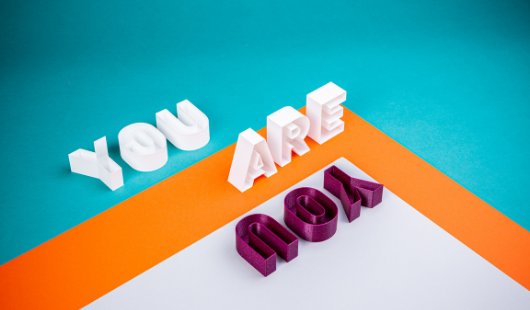
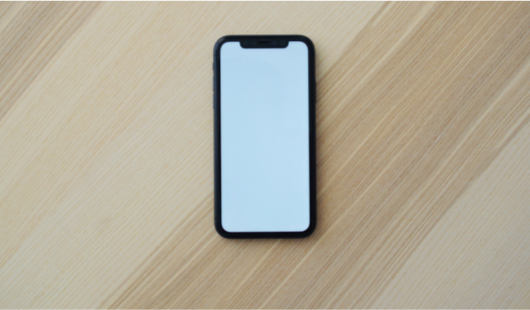

Mitt namn är Dennis
Jag är en driven och ambitiös person som brinner för webbdesign. Jag har alltid avsikter att lära mig nya trender inom webbdesign och programmeringsspråk.
Sommaren 2021 tog jag kandidatexamen med huudområde Informationarkitetur - med inrktining Webbredaktör Frontend-utvecklare. Ni kan räkna mig som en entusiastisk person som gillar utmaningar.
Jag är född och uppvuxen i regniga Borås. Långa promenader med min fralla är det bästa jag vet , annars brukar umgänge med familjen och vänner också vara toppen!
Jag har alltid varit intresserad av IT, programmeringsspråk sen barnsben och kan både använda Mac OS och Windows.
Som person skulle jag beskriva mig som snabblärd, lättsam och samarbetsvillig.
Kolla upp mina tidigare Projekt.
Tidigare projekt - uppdateras löpande
Ett eget projekt vid sidan av studien. Målet med projektet var att skapa en Musik applikation/spelare med React, html och css.
I denna projektet fick jag djupare kunskaper om hur jag kan styla olika komponenter till Musik appliaktionen, hur jag kan implementera olika komponenter mellan appliaktionen samt frambringa en responsiv design.
De programmeringsspråk/bibliotek som användes i projekt är: React ,Javascript , Html och Css
Visa Demo

Ett lite större projekt vid sidan av studien, där målet var att skapa en e-commerce webbplatse , där varukorg, log in site, produkt och startsida implmenterades. I denna enskilda projektet kunde jag koda lite hur jag ville, jag tog insperation från webbplatser exempelvis Zalando. I projektet fick jag använda mig av mina tidigare kunskaper inom javascript , html och CSS
De programmeringsspråk som användes i projekt är: Javascript , Html och Css
Visa Demo

Ett litet text-animation projekt, där Html och Css används för att rotera texten på olika sätt.
De programmeringsspråk som användes i projekt är: Html och Css
Visa Demo

Yttligare ett skolprojekt där syftet är att efterlikna Cosmopolitian magazine webbplats med ett innehåll av Klimatförändring. I Projektet skapades en mobileonly webbplats som ska demonstrera Cosmopolitian riktiga webbplats. I denna projekt fick jag lära mig att använda React chart för att presentera data från ett API.
(Vänligen inspektera webbplatsen med mobilmått)
De programmeringsspråk/bibliotek som användes i projekt är: React och css
Visa Demo
Ett skolprojekt där syftet är att skapa och visuellt formge en webbplats med responsiv design. Fokuset på projektet var att anpassa webbplatsen utefter uppdragsgivaren och att beakta principer för grafisk form, användarvänlighet/användbarhet och tillgänglighet. I denna uppgift fick jag lära mig att skapa en webbplats efter en påhittad uppdragsgivare, där bestämda punkter på vad som ska finnas med på webbplatsen var essentiell.
De programmeringsspråk som användes i projekt är: Html och css
Visa Demo
Ett eget projekt vid sidan av studien, där målet var att skapa en simpel och stilren landingpage för ett Café. Bilderna som används på landingpagen är endast exempel på hur en ladningpage på ett
Café kan se ut. I denna projektet lärde jag mig att göra animationer med hjälp av javascirpt och css, se exempelvis bilderna vid footern.
De programmeringsspråk som användes i projekt är: Javascript , Html och Css
Visa Demo
Kompetens
De programmeringsspråk/ramverk som jag arbetar med är Html5, Javascript, React, Wordpress, Bootstrap, jquery och Css3.
Förutom programmeringsspråk har jag även erfarenhet av att jobba med SEO, Ux/UI design samt skapa prototyper med Photoshop, Aftereffect och Adobe XD.
Kontakt
Om du behöver ytterligare information eller det är något du undrar över så tveka inte att kontakta mig